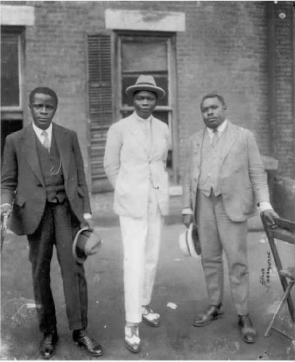
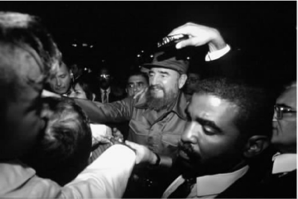
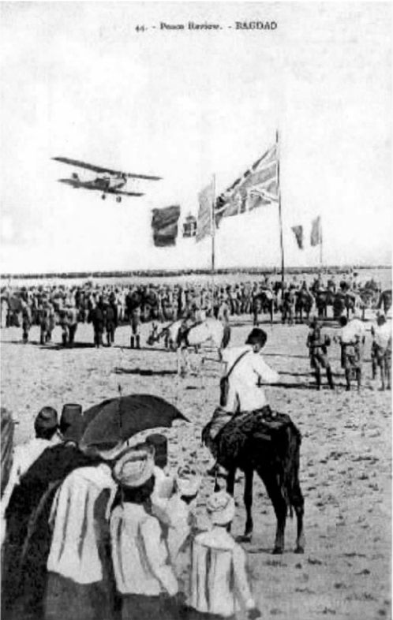

第二章 来自下层与上层的历史与权力
非洲和加勒比海的革命者在哈莱姆，1924年
我正观察一张照片。照片上三个男人并排而立，姿势呆板僵硬，严肃而若有所思地盯着镜头。每个人都衣着入时，穿着马甲，揣着怀表。中间身着白色套装、脚穿翼尖状饰纹皮鞋的男子头戴一顶帽子，其他两位则以手持帽。右侧身材矮小而略胖一些的男子撑着一张木制折叠椅的椅背。尽管他们正一起摆姿势合影，但彼此却保持着距离。这一点表明他们虽然认识，但却称不上是密友。他们衣着的华美与身后破旧的红砖房形成一种奇特的反差。看起来他们好像站在一所廉价公寓或办公楼的外面。他们身后的窗户的右扇有百叶窗，而另一边的窗户却没有。
这张照片是由哈莱姆文艺复兴运动时期著名的摄影师詹姆斯·范德尔奇拍摄的。这张1924年8月拍摄的照片上的人物分别是马库斯·加维、乔治·O.马克和克乔·托瓦罗——胡诺王子。加维来自牙买加，马克来自塞拉利昂，托瓦罗——胡诺来自达荷美共和国。那天他们都是来纽约市开会的，或许这张照片是在哈莱姆135号街西56号原“黑星”航运公司办公楼的后面照的。马克是联合黑人促进会的最高代理主席，他曾在弗里敦受过教育，并在苏格兰的阿伯丁和爱丁堡上过大学，他作为塞拉利昂的代表到纽约参加了1920年的联合黑人促进会会议。1922年，他被任命为联合黑人促进会代表团的全权代表参加了国际联盟会议。代表团请求国际联盟将德国以前在非洲的殖民地作为黑人居留地移交给联合黑人促进会管理，但此请求遭到拒绝。这些殖民地后来转交由英国和南非托管。

图6 马库斯·加维和乔治·O.马克、克乔·托瓦罗-胡诺王子。
加维，这位联合黑人促进会的创始人，1924年由于被指控利用邮件欺诈而被一个联邦调查局的官员判处有罪，这位联邦调查局的官员急于寻找借口将他驱逐出境。加维早年加入了牙买加的“国家俱乐部”，这个组织致力于摆脱英国统治寻求独立。之后加维在中美地区广泛旅行，然后去了伦敦。他的妹妹阿德里安娜当时在伦敦做家庭教师。在伦敦，他了解了泛非运动，该运动于1900年在伦敦召开了首次会议。他还阅读了布克·T.华盛顿的著作《出身奴隶》。最重要的是，他遇到了了不起的苏丹裔埃及人杜斯·穆罕默德·阿里并与之成为挚友。穆罕默德·阿里是一位民族主义者，他们二人共同经营阿里的宣扬激进民族主义的报纸《非洲时代与东方评论》。1914年当加维返回牙买加创建联合黑人促进会时，他已经形成了一套政治哲学，其基础是黑人权力和尊严的简单而有力的传达。两年后，他受布克·T.华盛顿之邀来到美国，并产生了巨大的影响，或许可以说在美国没有一个黑人移民的政治影响力比他更大了。他把反殖民的言语转换成民权和争取黑人权力的语言，在20世纪这两者将继续发展，并互相密切联系，彼此推动。这张照片记录了这种推动力量启动的那一时刻。
克乔·托瓦罗——胡诺王子本人刚刚从法国抵达纽约，并且要在哈莱姆自由大会堂举行的1924年年度联合黑人促进会会议上发言。托瓦罗——胡诺王子是保护黑人种族全球联盟的主席，该组织由他创建于巴黎，它的创立缘于一个有名的事件。当时因为托瓦罗——胡诺王子是黑人的缘故，几个美国白人游客试图把他扔出一间咖啡厅。当你审视这个贵族，这个流亡的达荷美共和国国王的侄子的时候，你会很容易看出为什么他如此强烈地憎恨这种待遇，以至于他引起了整个法国媒体的同情。正是由于这个原因，巴黎多年来享有对黑人艺术家和知识分子最具同情心的西方城市的美誉。约瑟芬·贝克、兰斯顿·休斯、詹姆斯·鲍德温、切斯特·海姆斯、西德尼·波切特都受到了法国人的喜爱——只要他们不是阿拉伯人。
在1924年的大会上，加维宣布联合黑人促进会已约有一万四千个分支。其中一半在北美洲，其余分布在加勒比海、中美洲、南美洲和非洲，全部成员据估计已达到六百万。这种非同寻常的全球化组织在托瓦罗——胡诺的报纸《大洲》的名字中得到了反映。这是跨越大西洋的黑人革命运动，这三个来自英法在非洲和加勒比海殖民地的革命者聚集在美国，想要联系不同文化间的激进主义并确保跨国的团结合作。
加维在加勒比海、美国和英国开展的革命运动，使他成为了萨尔曼·拉什迪所描绘的“被转化的人”的一个早期的范例。所谓“被转化的人”，也就是被不同文化“转化”的人。但这不是人们被动经历的事情：加维要求恢复黑人尊严的呼吁是自我转化的一种呼声。跨越不同地域时，语言、人和文化会发生改变，可以从转化的视角来看待它们是如何改变的。它还可以被更隐讳地使用，用来描绘个人或群体是如何通过改变自己对社会地位的认识而被转化的。
在这里，在纽约，三个人站在一起，准备向聚集在自由大会堂里参加联合黑人促进会会议的听众发言，他们不仅是一路从牙买加、达荷美共和国和塞拉利昂到哈莱姆的三个人。在重新描绘美国文化及超越全球文化的过程中，他们是积极的文化上的转化者。他们的相聚标志着被压迫国家间的革命性的思想意识的转化。后来，克乔·托瓦罗——胡诺王子受到了法国殖民当局的迫害，加维被联邦调查局勒令离开美国。在此后的几十年中，美国民权激进主义者——如歌手保罗·罗伯逊与加勒比海及非洲反殖民领导人之间的联系处于美国联邦调查局、英国军事情报五处和英国军事情报六处的监控之下，但此时为时已晚——加维的干预已经成功。加勒比海的激进主义已经抵达纽约和伦敦，争取黑人权力的事业将越来越壮大。一代接一代的加勒比海的活动家（如C.L.R.詹姆斯、克劳德·麦凯和乔治·帕德莫）积极沿着他们的脚印前进。

图7 菲德尔·卡斯特罗回到哈莱姆，1995年。
卡斯特罗重访哈莱姆
在1960年卡斯特罗访问哈莱姆期间，当拥挤的人群迎接这位古巴领导人时，他与马尔科姆·X见了面，此时在古巴，多次大型集会纷纷谴责美国的种族主义。一份黑人报纸《纽约市民的呼声》报道说：“对哈莱姆少数民族居住区的受压迫的居民而言，卡斯特罗就是那个铲除民族败类，让美国白人下地狱的大胡子革命者。”
现在，耐心排队等候聆听古巴领导人2000年9月演说的人们似乎也同样欣赏卡斯特罗与黑人事业的团结一致。“哈莱姆是卡斯特罗的家。我们热爱他，他是我们的兄弟。”一位哈莱姆当地的房地产经纪人杰比尔·艾莱——阿明说，“有非洲血统的人深受他的吸引。他相信所有人都应享有真正的自由，所有古巴人，尤其是所有非洲人和具有非洲血统的人都应享有真正的自由。他坚持自己的信仰，尽管他的人民遭受国际制裁和压力，他仍保持着自己和人民的尊严。”
希沙姆·艾迪，www.africana.com
1960年迎来了这段历史上最著名的时刻。菲德尔·卡斯特罗在市中心的酒店内遭到刻薄对待后，受马尔科姆·X邀请来到哈莱姆，入住在泰瑞莎酒店。卡斯特罗后来回忆说：“我立刻决定‘我要到哈莱姆去，因为那里有我的好友’。”卡斯特罗对哈莱姆的初访标志着古巴与美国黑人长期团结的开始，也标志着（正如卡斯特罗所说）产生于第三世界的两国人民——古巴人民与美国的第三世界人民之间的友情与同情的开端。
轰炸伊拉克——始自1920年
西方赢得世界并非靠观念、价值观或宗教的优越性，而是靠有组织的暴力。西方人常常忘却这一事实，而非西方人却从来都不会忘记。
塞缪尔·P.亨廷顿，引自“雷德在哪儿”网站，
炮击之下的巴格达日常生活的逐日记录
我正站在阳台上，越过黄色的房子，向外眺望着北部在夜色中拔地而起的黑色的石灰岩山脉。我仍能辨认出塞浦路斯的土耳其共和国的大旗，它挂在山腰上，这是一幅巨大的镶嵌工艺品，白底配以红色图案，色彩艳丽，在平行线条之间构成了新月形和星形两个图案。无论你在尼科西亚的任何地方，无论你何时眺望北方，你都会看到那面旗帜勇敢地越过地平线，在空中飞扬，旁边写着坚定的语句：“做一土耳其人，乐哉。”该岛被分开已有二十五年多了。联合国确立的分割线上的倒钩状铁丝网已锈迹斑斑，许多指挥部和瞭望台似乎已被长久地遗弃。然而，没有任何物体可以穿过分界线；双方仍然透过城墙、电缆和分界线上看不见的地雷互相怒目而视，双方回忆起了被抛弃的家园，回忆起失踪的家人和村庄被屠杀的夜晚。在经过艰苦斗争取得独立之后，另一个残留的殖民影响要归咎于人们自己。
我看着洒落在山上的暗淡的光线，听着从城市的另一边传来的傍晚的祈祷声。在此背景下，我能听见路透社的电子邮件发送到电脑里的声音，此时这一地区的人们都在写新闻稿。我看了看身后的桌子，看到了哈立德发来的一条信息。他最近刚被派往巴格达。我在他的名字上双击光标，他的信息便出现了。
发件人：哈立德 时间：星期三22/01/200323：08
收件人：沙燕
抄送：
主题：回复：报告
祝你平安，我今晚终于与我向你提到的那个人相遇了。要了解办公室里正在发生什么事情是很难的，在他的办公室里也一样。他们在那儿正忙着把收藏的珍宝转移到更加安全的地方——在电信局和外交部之间的博物馆是个合适的地方。不管怎样，我们最后安排在姆斯坦色尔街拐角处的阿尔海——穆罕默德的家里见面。这次谈话发生了意想不到的转折。别把这个发到新闻上，可你能把它发表在专栏上吗？如果尼克能把这则消息同时发表在多家报纸上，就请他帮个忙。
多谢。
哈立德
“轰炸的权利”：巴格达，2003年1月21日
一进门，我就看到他坐在屋子的另一边，胳膊很瘦，心不在焉地揣着手盯着地板上刻着菱形图案的地砖。我坐下后，他给我们两个人点了咖啡。我们热情地谈起了双方以前的老朋友，以及他在巴黎和伦敦度过的那几年时光。萨蒂克是巴格达古迹总管的高级代表，专门研究塞尔柱王朝时期（12至13世纪）的美索不达米亚人的书籍。几年前，基于他的博士研究，他出版了一本重要的学术论著，是关于迪奥斯科里斯的《药物论》（1224）的，他现在已成为研究那一时期的医学论文的权威。他在巴黎的国家图书馆用了一年多的时间研究《解毒剂》（1199）这本书。他给了我一篇他自己的文章，在该篇文章中，他分析了《解毒剂》（其中谈到了该如何培育植物以便获取那些植物的医疗性能）中的精美插图。我想更多地了解那一时期植物和药草在医学中的非凡作用，因此我向他解释了我此行的目的。突然，尘土四处飞扬，我们听到了远处传来的隐约的爆炸声。他看了看我，伸出舌头舔了舔他发干的嘴唇。起初，他一言不发，几十年来他从动乱的，有时充满恐怖的政权统治中幸存下来，这是他的一种自然本能。他的学术成就围绕着八个世纪以前巴格达作为伊斯兰世界的中心所创造出的辉煌的工艺品，这个领域非常“安全”，使他在某种程度上达到了“政治隐身”。然后他注视着我，开始讲了起来。
又是英国人干的。八十多年来他们一直在轰炸我的家园。这些来自英国的不速之客从天空上向我们投掷炸药，其间经历了四代人。事情始于1920年。当时我的曾祖父阿布达·拉赫曼正回村里参加他小儿子的婚礼，这时一架双翼飞机突然飞过来在婚礼仪式上投掷了一枚燃烧弹。按照村里以前的惯例，举行婚礼时，客人们被分成男女两个区域。炸弹落在男性聚集的区域，当时就使我们家族一半的男子死亡或伤残，包括曾祖父的长子、三个叔叔、两个堂兄弟和我祖母父亲的兄弟的四个儿子。从那以后，只要他们觉得时机合适，炸弹便又会从天而降。
现在此类事情多是由他们的老大哥美国来干的，但是你仍然能看到英国皇家空军的飞机沿着20世纪20年代英国人最初划定的路线划过我们的领空。二战后当他们准备最终（又一次）离开时，飞行正式开始。他们不辞劳苦地精细地勘测和拍摄了我们的每一寸国土。我的堂兄那时正在英国读书，他告诉我说在英国的吉勒大学有数百万张伊朗和伊拉克的侦察缩微胶片，这些都是由英国皇家空军680中队在撤离前拍摄的。你不会知道我们什么时候需要这些资料，问他们时他们微笑着说。当他们寻找石油的时候，或者当他们为确保将来拥有更多石油而决定轰炸我们的时候，就会用到这些资料。或许现在当他们坐在英国的操作室里计划着下一步要击中我们中的哪一个目标时，就使用着它们。
我们每一寸的国土都被拍摄了，从波斯湾的阿尔巴斯拉到阿马蒂亚北部的山区。这是我们的国土啊！从某种意义上讲，这几乎已经不再是我们的国土——即使她一直是我们的土地。就像中东地区的多数国家一样，这种局面是由两个人，一个法国人和一个英国人在一战期间所造成的。他们一个叫乔治·赛克斯，另一个叫马科·皮科特爵士。他们只是在伦敦偶遇，然后两人秘密地决定了所有的一切。战败的奥斯曼帝国将会被瓜分，新成立的国家，比如巴勒斯坦、约旦、伊拉克、叙利亚、黎巴嫩，都是从所剩下的土地的边边角角中创建出来的，以便于两个殖民帝国统治它们。当然英国已经控制了埃及和苏丹。伊拉克是由奥斯曼帝国剩下的三个省构成的。1920年，他们声称要让库尔德人独立建国，即建立库尔德斯坦。可是到了1923年，一时间他们把这个承诺忘了个一干二净。他们创造的不是国家，他们只是根据自己的利益在地图上绘制一些线条而已。我们之间过去没有边境。整个帝国从一端到另一端是开放的。当然各地区也有所不同，像以前一样，我们属于美索不达米亚的北部和南部。他们用倒钩状的铁丝网在流动的沙子上划出了他们新的“保护国”，据他们说，这些地区除了几个像我的曾祖父和祖父一样的无名的部落男子外杳无人烟，而像我的曾祖父和祖父这样的人，根本没有必要被询问怎样划分领土才对他们有益。游牧者是没有权利的。他们根本就不在那个地方。
他们也不像那些后来迅速到来的石油公司或军队。那些法国人在战争结束时迅速使他们的塞内加尔部队在贝鲁特着陆，随后占领了整个北部沿海地区。英国人在印度军队的协助下控制了巴勒斯坦，在叙利亚增派了顾问并占据了整个美索不达米亚。当时他们所有的中东殖民地都由英国印度行政部门来管理。你知道它们不是英国的殖民地——它们是“英属印度的托管地”。
他停了片刻，死死地盯住地板，然后又陷入了沉默。我递给他一支烟，他吸了一会儿，看着蓝色的烟雾缓缓升起。
“后来发生了什么事？”我问，“它们接管了之后？”他深深吸了一口气，摇了摇头接着讲了下去。
咳，它们完全占据了帝国原来的疆土。同时英国人在国际论坛上多次公开声明，所有“被解放的”国土，都要在他们所谓的“同意管辖”原则的基础上，由它们自己的国家管理机构管理统治。阿拉伯人相信了他们的话；为了这一诺言，难道他们没有受英国人的引诱去与英国人共同抗击土耳其人吗？别忘了英国人至今仍然还在利用所谓的“阿拉伯的劳伦斯”。所以，在1920年3月，在大马士革举行的叙利亚国民大会通过了决议，宣布叙利亚、巴勒斯坦、黎巴嫩独立。伊拉克领导人也立即宣布了伊拉克的独立，并立阿米尔·阿卜杜拉为国王。看到这种局面，英法直接找到国际联盟，国际联盟亲切地给予它们对全部这片领土的托管权。这并不令人吃惊，因为它们毕竟控制了国际联盟。受谁的托管？它们声称“托管”一词只是一个法律上的假定，目的是使它们对新殖民地的控制合法化。
可我们并不接受这一切。费萨尔国王的军队在黎巴嫩边境攻击法军，阿拉伯人在巴勒斯坦反抗犹太人，幼发拉底河中游的人民在反抗英国人。作为回应，法国人占据了整个叙利亚。在伊拉克，英国人没有动用他们的印度武装力量，而是动用了新成立的英国皇家空军来轰炸我们。记得对我曾祖父儿子的婚礼的轰炸吗？同样他们在索马里兰也动用了英国皇家空军。在和英国骆驼部队为期两个月的共同军事行动中，他们推翻了苦行僧首领穆罕默德·本·阿卜杜拉·哈桑的政权，英国人根据他的特征称他为“疯狂的毛拉”。说他疯狂当然是因为他要摆脱英国人的殖民统治。他们通常认为空军对民族主义者的轰炸和扫射是军事行动成功的关键。
他们新上任的热衷于开拓殖民地的大臣温斯顿·丘吉尔很早就意识到了空军在维持帝国主义对英国广阔领土的控制方面的优势。在起义爆发前，他已经调查过动用空军控制伊拉克的可能性。他说，这会涉及使用“某种令人窒息的炸弹，据预测可造成某种残疾但不会致人死亡……用于镇压动乱种族的最初的军事行动”。你不能忘记诸如此类的话。你也不会忘记下面的话。“我无法理解审慎使用毒气炸弹的做法。”他说，“我强烈赞成使用毒气对付那些野蛮的种族。”因此在索马里兰获胜之后，丘吉尔指挥了一场在伊拉克展开的英国皇家空军的军事行动，此次行动与上次类似。结果可想而知。起义的伊拉克人被成功地“安抚”了。他们制造战争并且称之为和平。这对他们而言有区别吗？丘吉尔第二年和“阿拉伯的劳伦斯”去开罗参加了一场有关英国托管地未来的会议，可没有一个阿拉伯人被邀请参加。他们任命了被法国人驱逐出叙利亚的费萨尔为伊拉克的国王。尽管巴格达强烈抵制，但事先安排好的公民投票还是使他当选了。
是的，新成立的英国皇家空军被派出来是要证明它的实力。它只是作为英国武装力量的一个独立分部而创建的。任何人都能看到那种技术在控制远方民族上的优势。轰炸机司令部司令阿瑟·哈里斯爵士——臭名昭著的“轰炸机哈里斯”这样解释道：“阿拉伯人和库尔德人现在明白了真正的轰炸意味着多大的伤亡和损失。四十五分钟之内，整个村子可以被夷为平地，三分之一的村民将被炸死或炸伤。”仅四十五分钟就能消灭一个村庄——战斗力还算不错。因此英国人在英国建立了五个皇家空军中队，在埃及建立了五个，在伊拉克和印度各建立了四个，在远东地区建立了一个。从现在开始我们和他们交战时不会再看清他们长什么样。是的，在他们除掉土耳其人之后，当我们中的一些人和他们并肩作战时，他们会像恶魔一样从空中返回。几个月以来英国皇家空军的第三十中队一直在我们上空盘旋，炸死了我们的人民，毁了我们的家园，直到印度士兵和英国军官在附近安营驻扎。英国的统治恢复了。
我还有一张宣传图片，这张图片是在我们刚从土耳其的统治下获得“解放”时由他们所做的。这是一张有关“和平行动回顾”的图片。这个和平行动回顾是第一个，因为接下来又有一次失败和胜利。这次是英军对伊拉克的。看看那架飞翔于我们头顶上空的哈维兰9型飞机，它的机关枪向后，随时准备向下面的人扫射，双翼下塞满了四百五十磅重的炸弹。谁是主宰？这里没有给你留下过多的错觉。权力来自空中。看吧。
说到这里，他仔细地在他的公文包里翻找，从中拿出了一张旧的折角的明信片递给我。我盯着它看了一会儿，试图找出其中的意思。根据影子来推断，这肯定是在晚上。一群阿拉伯旁观者正观看一场阅兵。中间，英国军官正站在一排骆驼部队的对面。几面大旗在空中飘扬，此时一架旧的双翼飞机正在他们头顶上方飞翔。我能辨认出图上的法国国旗和英国国旗。
“前面的那面旗是什么旗？”我问道。
那是意大利的海军军舰旗。在那场战争中，他们站在英军一方参战。拿着它吧！这是一件纪念品，可以让你在离开的时候记住这一切。我祖父曾听说他们只是在这里作短暂停留。是的，最终他们在1932年撤离了，但正如在埃及一样，这并不意味着我们真正独立了。只是部分独立而已！我们被迫签署协议，同意让英国控制我们的外交，在巴格达附近的哈巴尼亚和巴士拉附近的舒艾巴保留他们的两个空军基地，在战时随时征用伊拉克军队，保持他们对伊拉克石油公司的彻底控制。它的名称虽然是伊拉克石油公司，但英国政府控制着它，其中根本没有伊拉克人的所有权。根据独立和约的规定，伊拉克石油公司享有在伊拉克的独有勘探权。这些权利在1961年被废除，但公司本身直到1972年由哈桑·巴克尔和萨达姆·侯赛因实行国有化后才真正处于伊拉克人的控制之下。那是一个深得人心的行动。难怪他们不喜欢他！他们想要回他们的石油。他们已经开始谈论，当他们再次占领我们的国家时，哪个公司将会获得这些权利。

图8 和平行动回顾，巴格达，1918年。
他微笑片刻，然后坐回到椅子上，好像他在思考下一次占领的景象。他不再看着我，而是在心中默想着这一切。好像这个故事一旦开始，他就一定要把这个故事讲完，不论他要多少次强迫自己穿越时间的隧道回忆起那些曲折的故事。
英国军队撤离了，但这只是表面现象。我们被告知我们要在他们的指引和控制下管理自己。到了二战期间的紧要关头，当时我们中的一些人指望轴心国把我们从对英国的屈从中解放出来。当总理拉施德·阿里·卡伊莱尼不满英国军队要在伊拉克登陆时，他们就表示要赶总理下台，最后他被迫辞职了。为此拉施德·阿里组织了一场反对亲英的摄政王的政变。但英国拒绝承认他的政府，并要求让更多的军队登陆。随后他们在哈巴尼亚的指挥官攻击了包围基地的伊拉克军队。不久他们占领了巴士拉，夺取了巴格达，使摄政王复位。他们依靠蛮力又一次取得了控制权。在英国大使馆的指引下，新政权着手对武装力量和政府机构进行清理，处死了一些民族主义的同情者或将其送入澳法的拘留营。那就是他们关押我父亲阿布·卡里姆的地方。他在那儿一直待到我长成一个小伙子时才获得自由。
英国和归顺英国的伊拉克政权（就像由英国扶上台的波斯国王和约旦国王一样受到英国的控制）之间的密切关系一直持续到1955年签订《巴格达条约》的时候，该条约是哈希姆王朝与英国之间最后一个阿谀逢迎的协定。第二年是苏伊士运河战争！英军遭到了打击！不久之后，1958年爆发的第二次军事政变将令人憎恨的哈希姆政权推翻了。随之英国对伊拉克的支配力也宣告终结。但是英国的干涉并没结束。最初我们以为再也见不到他们了，因为对他们很温顺的君主没有了，他们的基地没有了，运河的争端也没有了，但他们仍然想获得石油。为什么他们总是回来呢？他们已经夹着尾巴离开了，被解放的国家在万隆显示了自己的威力。后来他们失去了伊朗，萨达姆受到激励把他们赶了出去。我们又将灭亡了。他们又回来了。
现在他们说我们对他们是个“威胁”。但事实难道不正是他们一直在威胁我们吗？是的，他们确实对我们构成了威胁。自20世纪40年代以来他们一直在发展核武器。在此之前很久他们就用化学武器轰炸我们。丘吉尔本人在1923年命令使用芥子气对付伊拉克北部的库尔德人，当时他们因为听说英国背弃承诺，不愿建立一个库尔德人的政权而起义。英国皇家空军用了将近一年半的时间反复攻击库尔德的苏莱曼尼亚城，他们才最终被镇压下去。咳，也不能说最终被镇压下去了。英国皇家空军于1931年又一次轰炸了库尔德人，这时英国正准备使伊拉克“独立”，它在准许独立的同时却没有提到库尔德人在伊拉克的地位。现在你仍然可以遇到那些对20世纪20年代英国皇家空军的机关枪扫射和轰炸记忆犹新的库尔德人。我的朋友易卜拉欣前不久在参观克亚科山时偶遇了一位仍能完整追忆此事的老人。“他们对这里的卡尼亚霍兰进行了轰炸，”老人告诉他，“有时一天轰炸三次。”
当然伊拉克人被认定为是“不负责任的”。别忘了，难道不是萨达姆入侵科威特吗？那是个错误，尽管很多伊拉克人强烈地认为从历史上讲科威特一直就是伊拉克的一部分。无论如何，你非常清楚联军如何在1992年快速动员起来夺回了科威特的主权并收回了开采石油的权利。人们问：“他们怎么不会为巴勒斯坦的被占领土做同样的事情？”我们中间只有少数年纪大的人能记得1920年英国人的飞机和装甲车是如何调动起来攻击沙特的部落的，他们当时攻击了英国在伊拉克和外约旦的新“主权”领地。英国人把沙特的一大块领土给了伊拉克的新政府，作为补偿他们又将一些土地移交给了内志（即沙特阿拉伯）的苏丹伊本·沙特。是的，他们给了他科威特三分之二的疆土。
当英国政府武断地判定领土归属时，伊拉克不可避免地要求拥有剩余领土的所有权。科威特最初是奥斯曼帝国一个省的一部分，伊拉克就是由这个省建立起来的。没有它，我们几乎不可能接近波斯湾的水域。英国人在1924年从伊本·沙特那里获得了马安和亚喀巴之间的狭长地带，其理由是它曾经是奥斯曼帝国大马士革省的一部分，因此应该成为巴勒斯坦的一部分。英国人成了判定这次争议谁是谁非的权威。他们的哈希姆君主——加齐国王在20世纪30年代后期首次坚持了伊拉克对科威特的所有权，当时科威特是英国的一个殖民地。然而英国人和科威特的酋长早在1899年就签署了保护协议。因此在奥斯曼帝国崩溃时，英国在科威特创建了一个独立的傀儡政权，将它从奥斯曼帝国的巴士拉省分离出来。当伊拉克的军官领袖阿布达勒·卡西姆在1961年再次提出对科威特的所有权，要求科威特摆脱英国统治时，英方立刻派来了军队。三十年后他们又回来了。轰炸也会重新开始。
是的，我们对他们是一个威胁。每次我们掰开面包，数以千计的英国人会处于被我们咀嚼的险境。每次当我咀嚼葡萄或蜜枣，吮吸桑葚或杏子时，在英国的某个人一定会因恐惧而浑身发抖。每次当我儿子爬上树去找无花果，优雅威严的英国绅士就会处于险境。我们想过一种属于我们自己的生活，没有他们的干涉。有一天晚上在电视上我听到一个伊拉克老人说：“他们拥有一切，而我们一无所有。我们不想从他们那儿得到任何东西，而他们却总想着要从我们这儿得到更多的东西。”我们所要求的就是让他们停止干涉我们的事务。自1920年以来我们没有轰炸过他们而是他们一直在轰炸我们。他们从来就没有想过这一点吗？我们从来不会让他们心生不安。他们好像认为这是上天赋予他们的权利。或者这是不是他们的另一种人权，一种轰炸他国的权利？当然这种权利不是由我们的真主赋予的，感谢真主。自从他们的空军成立以来，他们想什么时候轰炸我们就什么时候轰炸我们。可他们仍然声称我们对他们是一种威胁。几十年来，什么时候我们使他们不高兴或触犯了他们的利益，他们就通过一次次的轰炸一直在屠杀我们。我想我们的问题是我们从来不是容易被控制的。我们与有的中东国家不一样，并不是他们想要什么就给他们什么。因此他们不断地来轰炸我们，而我们一再地从他们手中挣脱。他们不会征服我们，也从不会“平定”我们——即使他们一直坚持这样去做。
几年前，也就是1998年斋月的前两天，我们全家都在巴格达的公寓里睡觉。我们那栋公寓很高，正对着扎乌拉公园，俯瞰圣曼苏尔雕像。在我们准备起床做晨祷之前的几个小时里，警报突然响了，炸弹落在我们周围，他们那不祥的炸弹像焰火般将天空照亮。前脸用白粉刷过的建筑物和桥梁突然被炸塌了，就像沙堡在潮水到来时塌掉一样。从那时起他们创立了“禁飞区”，他们没有真正停止过。他们消失的时候，土耳其人就飞过来轰炸库尔德人——库尔德人可正是他们的禁飞区应该保护的人。英国人自己承认，在过去的一年里他们至少每隔一天就轰炸我们一次。这是他们自二战以来持续时间最长的轰炸。如今他们扬言他们又要回来了，又来毁坏我们的家园，改换我们的政府，这样的事情他们已经做过无数次了。为什么这么多年来他们从那么遥远的地方飞冲向我们？为什么我们引起了他们这么大的兴趣？因为我们有“他们的”石油。这就是从1920年至今始终没有消失的真正的威胁。
我经常感到困惑，如果我们时不时地在英国轰炸他们，一代接一代地轰炸，他们会是何种感受？如果时机适合我们就改换他们的政府，毁坏他们的医院，让他们没有净水喝，杀死他们的孩子和家人，他们又会是何种感受？现在多少个孩子死掉了？我想都不敢想。他们说他们的帝国时代已经结束了。当你听到空中的燃烧弹发出的断断续续的爆炸声时，你就不会这样想了。或者当你躺在床上，炸弹把你和孩子周围的建筑物炸得直晃动时，你就不会那样认为了。正是在那一时刻你会梦想真正的自由——托靠真主——远离英国皇家空军的自由。